GraphvizSwift is a macOS application that reads Graphviz DOT Language files for display. DOT defines the nodes and edges of a network graph, which Graphviz interprets to draw a network graph diagram. On macOS, Graphviz can use Quartz to render the diagrams into the following image formats: BMP, GIF, JPEG, PDF, PNG, SVG, and TIFF.
Note that Graphviz DOT language files by convention have the .gv extension, as the .dot extension is registered for Microsoft DOcument Templates (Universal Type Identifier com.microsoft.word.dot).
You have two choices for obtaining the GraphvizSwift package installer: either by downloading the package installer directly, or by cloning the repository and building the package installer.
Note that GraphvizSwift uses WebKit's WebView and WebPage, NotificationCenter's MainActorMessage, and Liquid Glass effects, all introduced with macOS 26 Tahoe.
You can install GraphvizSwift directly onto your Mac by downloading the package installer from its repository. Select graphvizswift-arm64.pkg and then download the raw file.
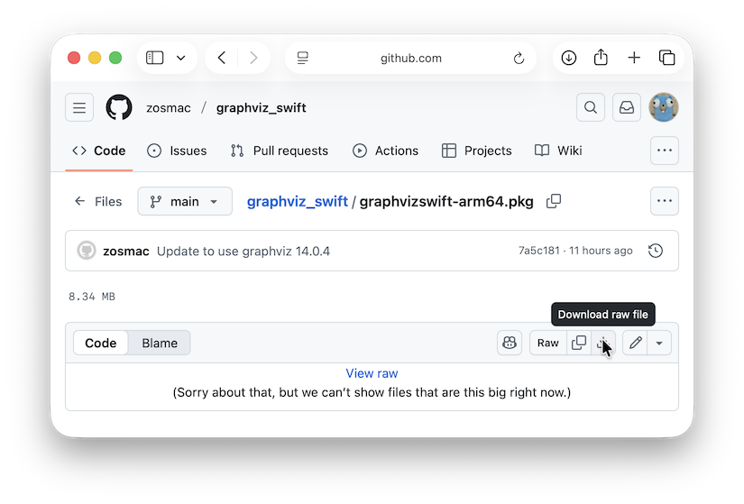
Similarly, download graphvizswift-arm64.pkg.sha512. Then, verify the package installer:
cd ~/Downloads
sha512sum -c graphvizswift-arm64.pkg.sha512
If this reports graphvizswift-arm64.pkg: OK, then remove it from quarantine:
xattr -d com.apple.quarantine graphvizswift-arm64.pkg
To build the GraphvizSwift App, first download and install Xcode. Xcode provides the Command Line Tools (e.g. git, make) for building Graphviz, xcodebuild for building the GraphvizSwift App, and the IDE for macOS app development and testing.
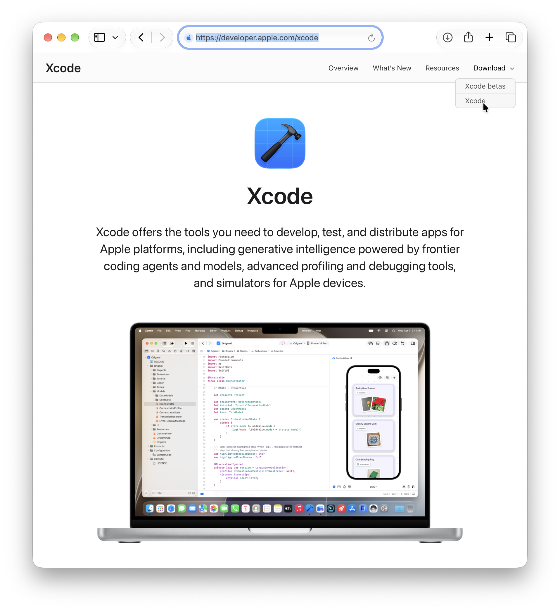
git clone git@github.com:zosmac/graphviz_swift.git
Create the macOS package installer graphvizswift-arm64.pkg to install the GraphvizSwift App locally and to distribute it for installation on other macOS hosts.
cd graphviz_swift
make pkg
Open the package installer:
open graphvizswift-arm64.pkg
Enter the password for your macOS system account when prompted, and the app will be installed in /Applications/GraphvizSwift.app.
Once installed, find GraphvizSwift in the /Applications folder or via the App Launcher. Open the app, which will first present an open document navigator view. Graphviz includes a sample folder which is deployed with the GraphvizSwift app. In the document navigator, press the key combination ⌘⇧G. This opens a sheet to enter a Unix path. The sample folder is /Applications/GraphvizSwift.app/Contents/Frameworks/share/graphviz/graphs/directed:
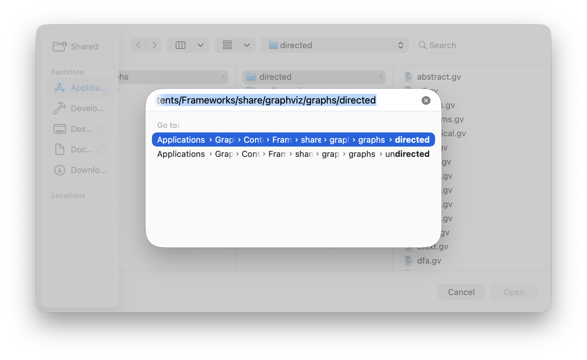
The Graphviz sample folder installs a number of example files (extension .gv). Select from this list or navigate to other folders containing .gv files.
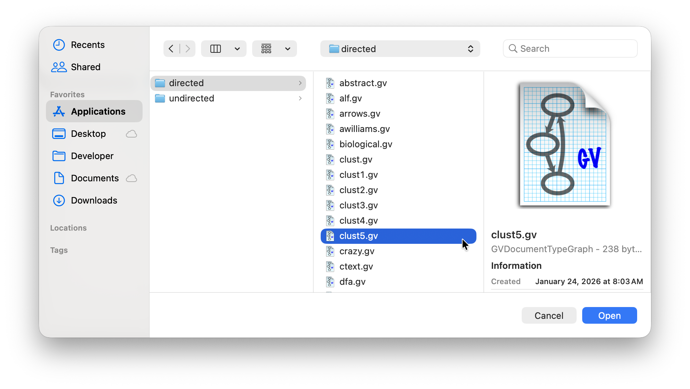
Upon selection, GraphvizSwift presents a document view of the file.
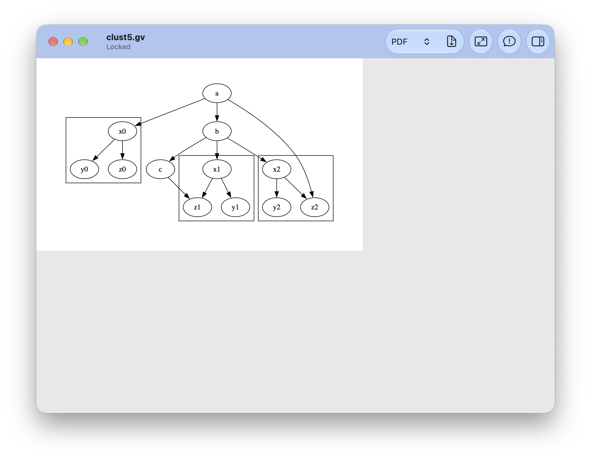
The toolbar has a View Type popup menu to set the desired rendering type. The default is PDF, which you can change in Settings.
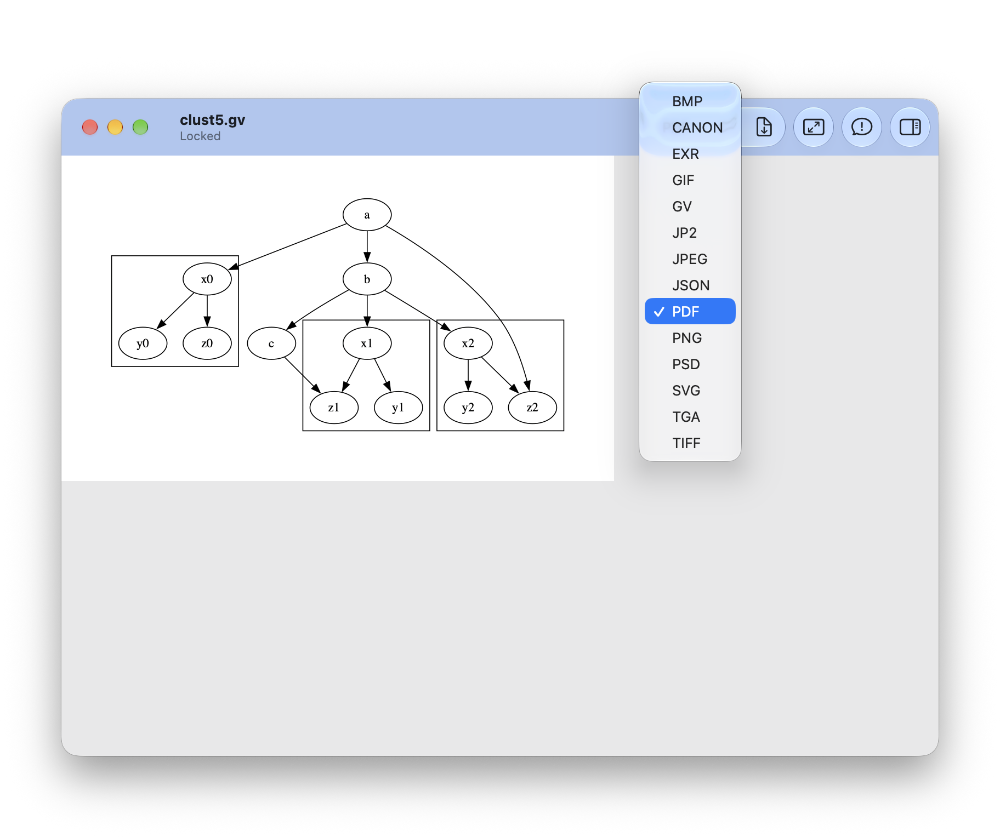
The adjacent Save button saves the file as a document of that type.
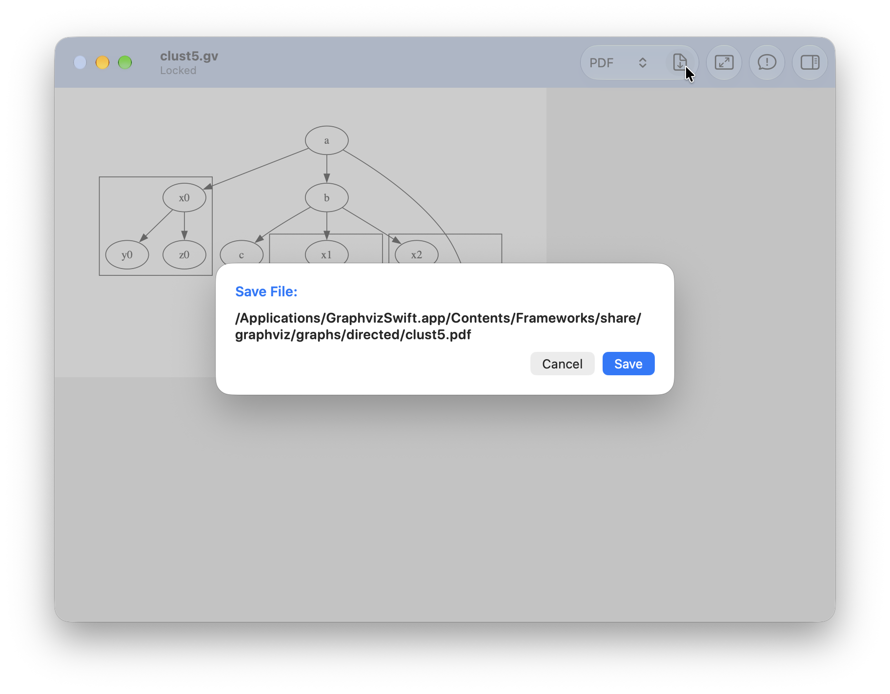
Next is a Zoom button to toggle the size of the image between the image's actual size and a size that fits the window. Use the two finger pinch gesture to zoom the image in and out.
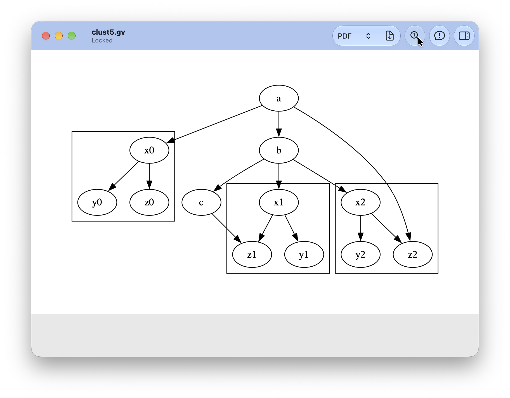
The Messages button follows the zoom button. If highlighted in red, select it to display any error messages from rendering the graph:
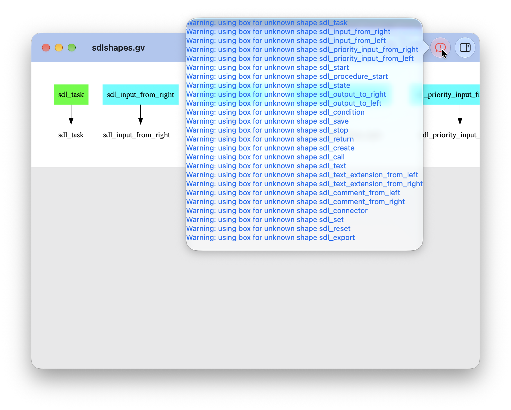
The final button Attributes displays a sidebar for updating global graph, node, or edge attributes of the graph:
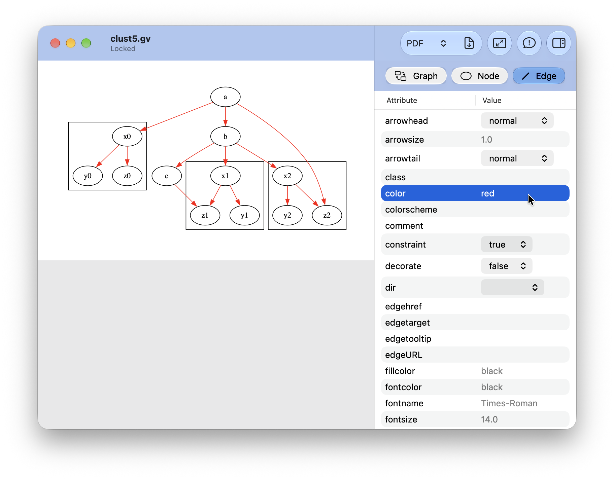
For guidance on setting attributes, from the Window menu select Show Attributes Documentation. Note that some of the links in the documentation open external sites. To return to the attributes documentation, select Overview below the title bar:
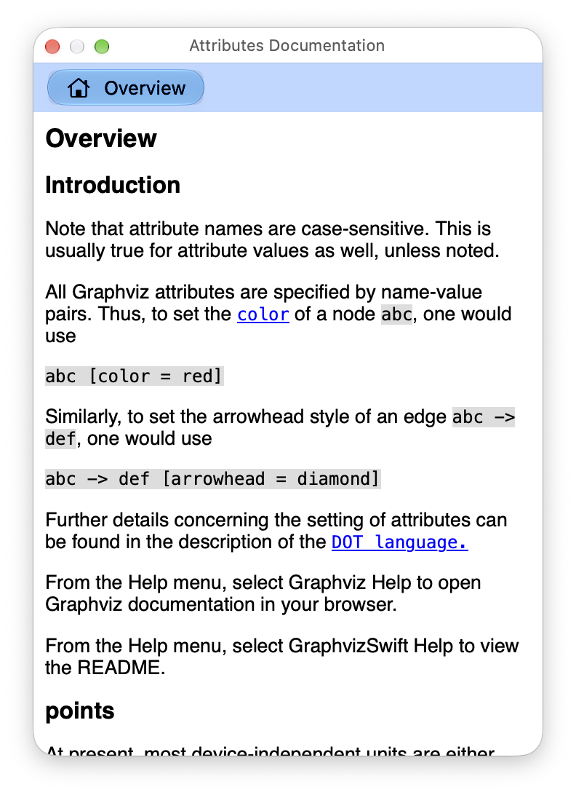
You may also edit the file directly to update global attributes and to edit attributes for specific nodes, edges, or clusters. To enable edit mode, select GV from the View Type popup:
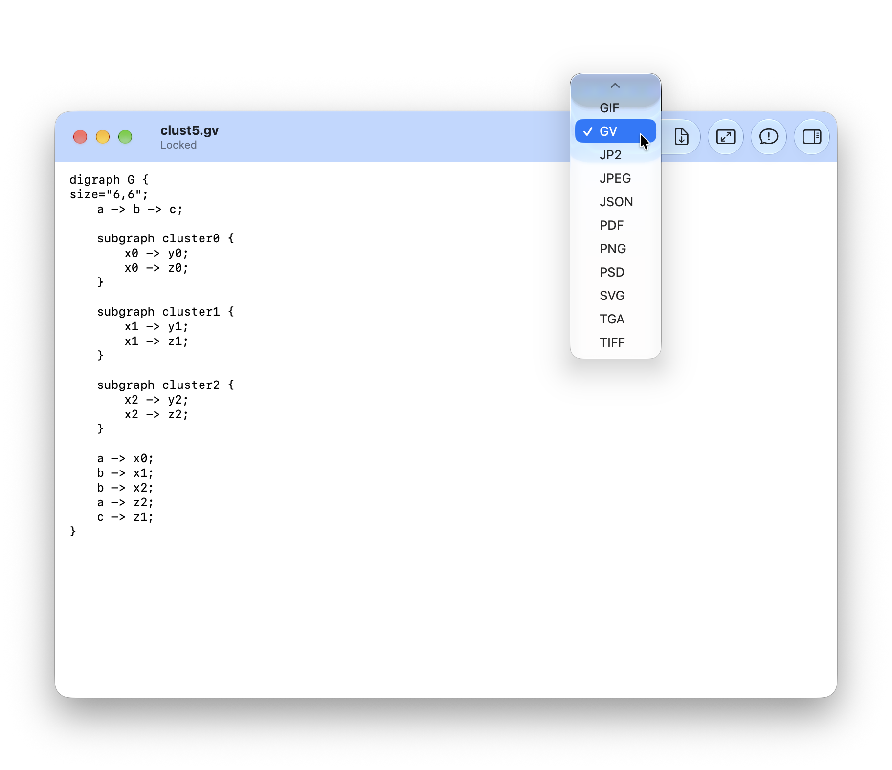
With GraphvizSwift's Settings, you may configure several defaults for the app. The View Type popup menu specifies the type for rendering graphs. The default is PDF. You may also configure defaults for the Layout Engine for formatting graphs, the Text Size of gv, canon, and json renderings, and the Input Scale for node position points to inches conversion:
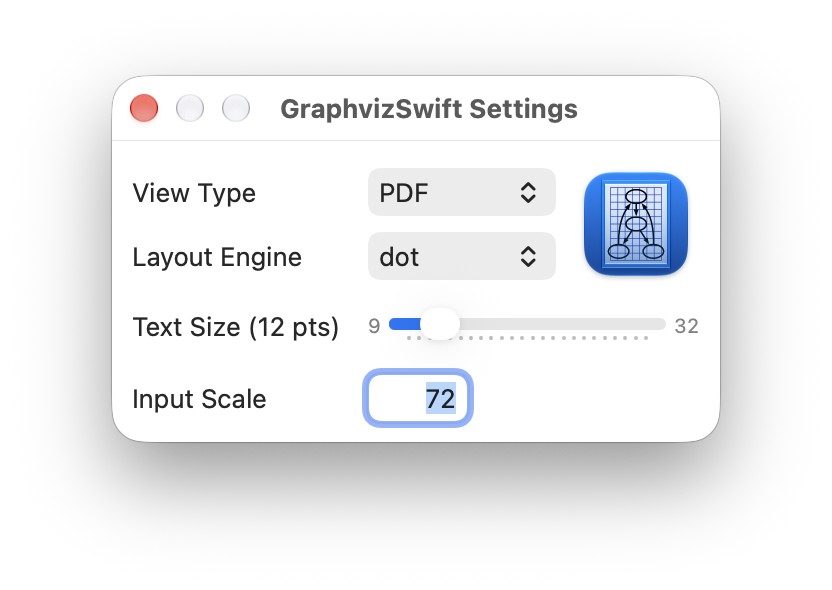